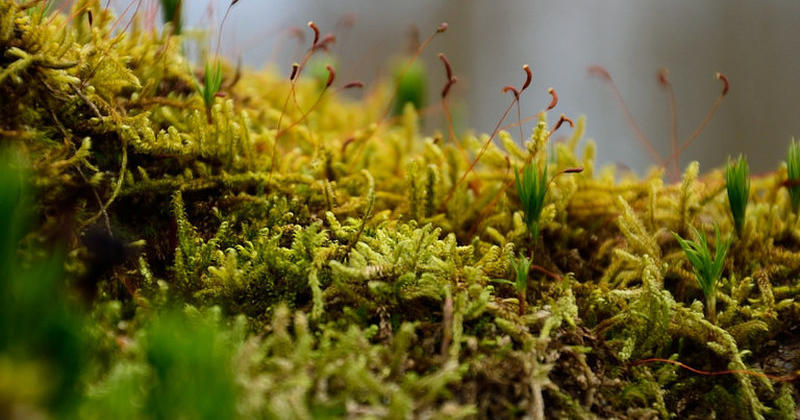
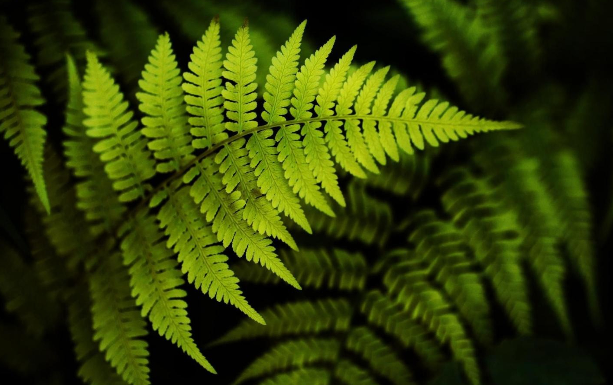
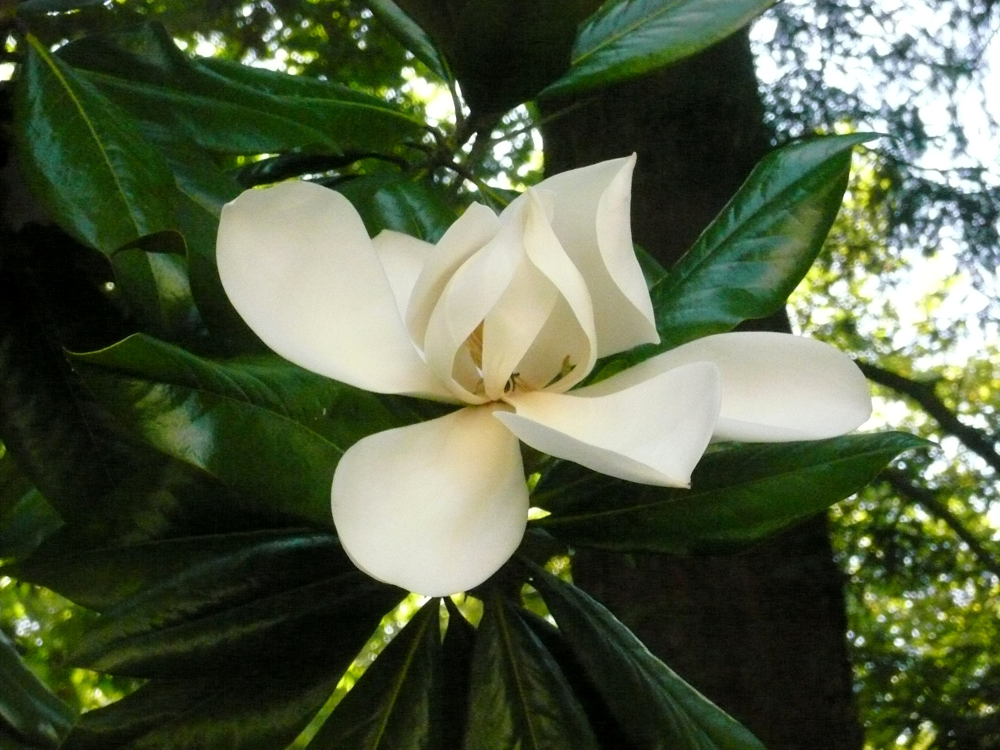

Головні групи рослин на Землі та їх особливості.(щоб дізнатися більше про певні рослини-натисніть на зображення)
Найдавніші рослини, які живуть переважно у воді і не мають справжніх стебел чи листків.
Прості наземні рослини, які не мають квітів і розмножуються за допомогою спор.

Давні рослини з гарним листям (вайями), які також розмножуються спорами, а не насінням.

Найбільш розвинена група рослин, яка має квіти та насіння всередині плодів.

| Група рослин | Коріння та листки | Спосіб розмноження | Середовище |
|---|---|---|---|
| Водорості | Відсутні (є талом) | Спорами або поділом | Переважно вода |
| Мохи | Листки є, замість коренів — ризоїди | Спорами | Вологі ділянки суші |
| Папороті | Є справжні корені та листки (вайї) | Спорами | Тінисті ліси |
| Квіткові | Є всі органи (корінь, стебло, листок, квітка) | Насінням у плоді | Усі куточки Землі |
Сайт розробив Еміль (EMIL-DESIGNING) | Проєкт з інформатики, 2026